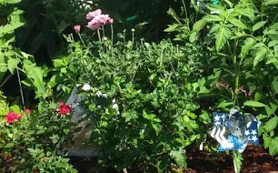
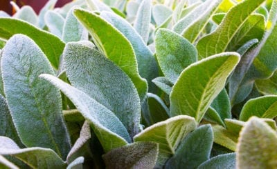

General Mums Info
- Blooms in the late summer
- Deadhead as needed
- Thin as needed, usually very little
- General fertilizer
- 
- Pests may include deer and bugs, treat with garden pest spray
- Cut all the way back once done blooming
- Also trim back to 6in. in early June to promote increase blooms
- Located in various gardens with several colors
- For more info visit Mum info
General Black-eye Susan Info
- Blooms mid Summer
- Deadhead regularly to promote new blooms
- Thin in spring and fall, these will take over the garden!
- General fertilizer

- Usually deer and ground hog likes these
- Perenniel,At the end of the flowering season,cut down to ground.
- Found everywhere in yard front and back
- For more info visit black-eyed Susan info
General Lamb's Ear Info
- Bloom in the late spring
- Clip flowers after they fade
- No need to thin, but show up randomly
- General fertilizer
- 
- Pests include deer,bunnies
- Tall spikes of pink flowers
- Located just in this garden for now
- For more info visit Lamb's Ear info
General Catmint Info
- Blooms all summer
- Clip flowers after they fade
- divide when too big for area(divided 2020)
- General fertilizer

- No known pests attracks lots of bees
- Perenniel,can get lanky
- Located in front and back woods only right now
- For more info visit Catmint info

General Bleeding Heart Info
- Blooms late spring / early summer
- Cut back after all flowers fade
- Show up randomly mostly in pink
- General fertilizer

- Pests may include deer but rare
- Low growing with white and pink colored flowers
- Located in various gardens mostly in front wood garden
- For more info visit Bleeding Heart info
General Pulmonaria Info
- Blooms late spring , early summer
- Clip faded flowers/leaves
- Divide as needed
- General fertilizer

- no known pests
- better in part shade, they fade fast in the summer gardens
- Located in amny gardens, does best in shady areas
- For more info visit Pulmonaria info
This is often a neglected garden, mostly due to the poor soil and amount of weeds. Additionally, it is a feast for critters bugs and animals included. Continuing to try and improve it...